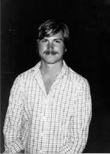

Mac Doğuyor
Devrim İstediğini Söylüyorsun...

Jobs 1982’de
Jef Raskin’in Bebeği
Jef Raskin, Steve Jobs’ı büyüleyebilecek – veya sinirini bozabilecek tipte bir karakterdi. Sonunda ikisini de yaptı. Hem şakacı hem de sıkıcı olabilen, felsefi düşünen bir adam olan Raskin bilgisayar bilimi okumuş, müzik ve görsel sanatlar öğretmenliği ve oda orkestrası şefliği yapmış, gerilla tiyatrolarını organize etmişti. U.C. San Diego’ya 1967’de teslim ettiği doktora tezinde bilgisayarların metin bazlı değil grafik arayüzlü olmaları gerektiğini savunuyordu. Öğretmenlikten bıkınca bir sıcak hava balonu kiralayıp rektörün evinin üstünden uçarak geçti ve istifa ettiğini haykırdı.
Jobs 1976’da Apple II’nin kullanım kılavuzunu yazacak birini ararken, küçük bir danışmanlık firması olan Raskin’e telefon etti. Raskin garaja geldi ve Wozniak’ın bir tezgâhta harıl harıl çalıştığını gördü; Jobs onu 50 dolara bir kullanım kılavuzu yazmaya ikna etti. Raskin sonradan Apple’ın yayın departmanında tam gün müdürlük yapmaya başladı. Hayallerinden biri kitlelere yönelik ucuz bir bilgisayar yapmaktı ve 1979’da Mike Markkula’yı kendisini küçük “Annie” projesinin başına getirmeye ikna etti. Raskin bilgisayarlara kadın ismi vermeyi seksist bulduğundan, projeye en sevdiği elma cinsi olan McIntosh’un adını verdi. Ama ses sistemleri üreticisi McIntosh Laboratory ile karıştırılmasın diye ismin yazılışını değiştirdi. Böylece tasarlanan bilgisayarın ismi Macintosh oldu.
Raskin’in hayalinde ekranı, klavyesi ve bilgisayarıyla 1.000 dolara satılacak basit bir ev cihazı vardı. Maliyeti düşürmek için ufak, beş inçlik bir ekranın ve çok ucuz (ve yetersiz) bir mikroişlemci olan Motorola 6809’un kullanılmasını önerdi. Kendini bir filozof olarak gören Raskin düşüncelerini “Macintosh Kitabı” adını verdiği bir deftere yazıyordu. Zaman zaman manifestolar yayınladığı da oluyordu. Bunlardan birinin adı “Milyonlarca Bilgisayar”dı ve şu hedefle başlıyordu: “Kişisel bilgisayarlar gerçekten kişisel olacaksa her ailede bir tane bulunmalı herhalde.”
Macintosh projesi 1979’un tamamını ve 1980’in başlarını sallantıda geçirdi. Birkaç ayda bir iptal edilmesine ramak kalıyordu, ama Raskin her seferinde Markkula’yı insafa getirmeyi başarıyordu. Projenin araştırma ekibinde sadece dört mühendis vardı; Good Earth restoranının yanındaki ilk Apple ofisinde, şirketin yeni merkez binasının birkaç sokak ötesinde çalışıyorlardı. İşyeri öyle çok oyuncakla ve uzaktan kumandalı maket uçakla doluydu ki (Raskin bunlara bayılıyordu), makine tutkunlarına hizmet veren bir gündüz bakımevi gibi görünüyordu. Arada sırada işi gücü bırakıp, üstünkörü Nerf Ball[6] karşılaşmaları düzenliyorlardı. Andy Hertzfeld şöyle hatırlıyor: “Herkes oyun sırasında saklanmak için çalışma alanlarını karton barikatlarla çevirdi, böylece ofis bir kartondan labirente döndü.”
Ekibin yıldızı, Wozniak’ın kodlarına tapan ve benzer hayranlık uyandırıcı çalışmalar üretmeye çalışan, Burrell Smith adlı sarışın, melek yüzlü, duygusal, kendi kendini yetiştirmiş, genç bir mühendisti. Atkinson, Apple’ın müşteri hizmetleri bölümünde çalışan Smith’i keşfedip de doğaçlama çözümler bulma yeteneğine hayran kalınca onu Raskin’e önermişti. Smith sonradan şizofreniye yenik düşecekti, ama 1980’lerin başlarında manik enerjisini haftalarca süren dahice mühendislik çalışmalarına kanalize etmeyi başarıyordu.
Jobs Raskin’in vizyonuna bayılsa da, maliyeti düşük tutmak adına ödünler vermeye razı olmasından hoşlanmıyordu. 1979 sonbaharında bir gün Jobs ona böyle şeylerle uğraşmak yerine, ısrarla “manyak iyi” dediği türden bir ürün yaratmakta odaklanmasını söyledi. “Fiyatı merak etme sen, bilgisayarın özelliklerini belirle yeter,” dedi ona. Raskin alaycı bir memoyla karşılık verdi. Bunda önerilen bilgisayar için gerekli her şey vardı: 96 karakterli bir yüksek çözünürlüklü renkli ekran, şeritsiz çalışan ve her grafiği bir saniyede renkli olarak basabilen bir yazıcı, ARPANET’e[7] sınırsız erişim, ses tanıma ve müzik sentezleme özelliği (“Caruso’nun Mormon Tabernacle Choir versiyonunu bile iyi akustik özellikleri olan bir konser salonunda çalınıyormuş gibi sentezleyebilmeli.”) Memo şöyle son buluyordu: “Sadece istediğimiz özelliklerle başlamak anlamsız. Özelliklerin yanı sıra bir hedef fiyat belirlemekle ve günümüzün ve yakın geleceğin teknolojisini göz önünde bulundurmakla başlamalıyız işe.” Bir başka deyişle Raskin, Jobs’ın ürününüze yeterince tutku besliyorsanız gerçekliği çarpıtabileceğiniz inancını hiç paylaşmıyordu.
Çatışmaları kaçınılmazdı, özellikle de Jobs’ın Eylül 1980’de oy çokluğuyla Lisa projesinden uzaklaştırılmasından ve damgasını vurabileceği başka bir yer aramaya başlamasından sonra. Raskin’in kitlelere yönelik, sade grafik arayüzlü ve temiz tasarımlı, ucuz bir makine üretmekle ilgili manifestolarından etkilendi. Jobs’ın gözünü Macintosh projesine dikmesinden sonra Raskin’in günlerinin sayılı olması da kaçınılmazdı. “Steve yapmamız gerektiğini düşündüğü şeyleri dayatmaya başladı, Jef somurtmaya başladı ve sonucun ne olacağı baştan belliydi,” diye anımsıyor, Mac ekibinin üyesi olan Joanna Hoffman.
İlk sürtüşme Raskin’in gücü yetersiz Motorola 6809 mikroişlemciye bağlılığı yüzünden çıktı. Bu sefer de Raskin’in Mac’in fiyatını 1.000 dolardan düşük tutma arzusuyla Jobs’ın manyak iyi bir makine yaratma kararlılığı çatışıyordu. Jobs Mac’te Lisa’da kullanılan, daha güçlü Motorola 68000’in kullanılması için baskı yapmaya başladı. 1980 Noeli’nden hemen önce Jobs, Raskin’e haber vermeden Burrell Smith’e daha güçlü çipi kullanarak, baştan tasarlanmış bir prototip yapmasını söyledi. Smith bu işe dört elle sarıldı, tıpkı kahramanı Wozniak’ın yapacağı gibi; üç hafta durmadan çalıştı ve yazılımcılıkta çeşitli nefes kesici çığırlar açtı. İşini tamamladığında Jobs Motorola 68000’e geçilmesini dayatabildi ve Raskin Mac’in fiyatını somurtarak tekrar hesaplamak zorunda kaldı.
Meselenin daha önemli bir boyutu da vardı. Raskin’in istediği ucuz mikroişlemci, ekibin Xerox PARC ziyaretlerinde gördüğü göz alıcı grafiklerin –pencerelerin, menülerin, farenin vs.– tamamına yetmezdi. Raskin herkesi Xerox PARC’a gitmeye ikna etmişti ve bit eşlemli görüntüyle pencere fikrinden hoşlanıyordu. Ama sevimli grafiklerle ikonlardan hazzetmiyordu ve klavye yerine tıklamalı fare kullanma fikrinden nefret ediyordu. “Projedeki bazı insanlar her şeyi fareyle yapma fikrine kafayı taktılar,” diye yakındı sonradan. “İkonların saçma sapan kullanılması da başka bir örnek. İkon demek, insanların konuştuğu her dilde eşit ölçüde anlaşılmaz olan bir sembol demektir. İnsanların fonetik dilleri icat etmelerinin bir sebebi var.”
Raskin’in eski öğrencisi Bill Atkinson, Jobs’ın tarafını tuttu. İkisi de daha alımlı grafikleri ve fare kullanımını destekleyecek güçlü bir işlemci istiyorlardı. “Steve projeyi Jef’ten almak zorunda kaldı,” diyor Atkinson. “Jef çok sabit fikirli ve inatçıydı, Steve projeyi ondan almakta haklıydı. Böylesi dünya için daha hayırlı oldu.”
Anlaşmazlıkları sadece felsefi değildi. Kişilik çatışmalarına dönüştü. “İnsanlar bir dediğini iki etmesinler istiyor bence,” dedi Raskin bir keresinde. “Onun güvenilmez olduğunu ve eleştirilmekten hoşlanmadığını hissettim. Onu melek gibi görmeyen insanlardan hazzetmiyor sanki.” Jobs da Raskin’i aynı ölçüde eleştiriyordu. “Jef cidden kendini beğenmişti,” dedi. “Arayüzlerden pek anlamıyordu. Ben de cidden iyi olan bazı adamlarını, örneğin Atkinson’ı ve kendi adamlarımdan bazılarını alıp projeyi devralmaya ve berbat bir şey yerine daha ucuz bir Lisa üretmeye karar verdim.”
Ekipteki bazıları Jobs’la birlikte çalışmayı olanaksız buldular. “Jobs gerilimi, entrikaları ve ağız dalaşlarını engelleyeceğine iyice körüklüyor sanki,” dedi bir mühendis, Aralık 1980’de Raskin’e yazdığı bir memoda. “Onunla konuşmaktan çok hoşlanıyorum ve fikirlerini, pragmatik yaklaşımını ve enerjisini takdir ediyorum. Ama ihtiyacım olan güvenilir, destekleyici, rahat ortamı sunduğunu hissetmiyorum.”
Ama başka birçok kişi Jobs’ın duygusal kusurlarına karşın, evrende iz bırakmalarını sağlayacak karizmaya ve şirket gücüne sahip olduğunu biliyorlardı. Jobs personele Raskin’in sadece bir hayalperest olduğunu, kendisininse iş bitirici olduğunu ve Mac’i bir yılda tamamlayacağını söyledi. Lisa grubundan kovulmasının öcünü almak istediği ve rekabetin onu kamçıladığı belliydi. Mac’in dağıtımına Lisa’nınkinden önce başlanacağına John Couch’la herkesin önünde 5.000 dolara bahse girdi. “Lisa’dan daha ucuz ve daha iyi bir bilgisayar yaratıp piyasaya daha önce sürebiliriz,” dedi ekibe.
Jobs, Raskin’in Şubat 1981’de bütün şirkete vereceği bir öğle seminerini iptal ettirerek grubun üstündeki hâkimiyetini pekiştirdi. Raskin seminer odasının yanından tesadüfen geçerken içeride kendisini bekleyen yüz kişi olduğunu keşfetti; Jobs onun konuşmasının iptal olduğunu başka kimseye bildirme zahmetine girmemişti. Bunun üzerine Raskin konuşmasını yaptı.
Raskin bu olaydan sonra Mike Scott’a zehir zemberek bir memo yazdı; Scott şirketin kurucu ortaklarından biriyle büyük hissedarlarından birinin arasında kalan başkan konumuna düştü yine. “Steve Jobs’la/Steve Jobs için çalışmak” başlıkla memoda Raskin şöyle diyordu:
O berbat bir yönetici... Steve’i hep sevmişimdir, ama onunla çalışamıyorum... Jobs randevularını kaçırıyor hep. Millete alay konusu olacak neredeyse... Düşünmeden kötü kararlar vererek hareket ediyor... Sezar’ın hakkını Sezar’a teslim etmiyor... Yeni bir fikir duydu mu hemen saldırıya geçiyor genellikle, değersiz ve hatta salakça bir fikir olduğunu söylüyor, onunla uğraşmanın zaman kaybı olduğunu söylüyor. Sırf bu bile kötü yöneticilik, ama o fikir iyiyse kısa süre sonra millete kendi fikri olduğunu söylemeye başlıyor... İnsanların sözünü kesiyor, dinlemiyor.
O gün öğleden sonra Scott, Jobs’la Raskin’i Markkula’nın karşısında yüzleştirdi. Jobs ağlamaya başladı. O ve Raskin tek bir konuda hemfikirdiler: Birbirlerinin emrinde çalışamazlardı. Scott Lisa projesinde Couch’un tarafını tutmuştu. Bu sefer Jobs’ın kazanmasına izin vermenin daha iyi olduğuna karar verdi. Sonuçta Mac uzak bir binada yürütülen küçük bir geliştirme projesiydi ve Jobs’ın şirketin merkezinden uzak kalmasını sağlayabilirdi. Raskin’e izne çıkması söylendi. “Suyuma gitmek ve beni oyalayacak bir şeyler vermek istiyorlardı; benim için hava hoştu,” diye anımsıyordu Jobs. “Garaja geri dönmek gibiydi benim için. Bizzat topladığım bir ekibim vardı ve kontrol bendeydi.”
Raskin’in ekarte edilmesi adil görünmeyebilir, ama sonuçta Macintosh için iyi oldu. Raskin düşük hafızalı, güçsüz işlemcili, teypli, faresiz ve minimal grafikli bir cihaz istiyordu. Jobs’ın tersine o fiyatı 1.000 dolara kadar indirmeyi başarabilirdi ve bu, Apple’ın pazar payını arttırmasını sağlayabilirdi. Ama Jobs’ın yaptığını yapamazdı, yani kişisel bilgisayar sektörünü dönüştürecek bir makineyi yaratıp pazarlayamazdı. Aslında seçilmeyen yolun nereye götürdüğünü görebiliriz. Raskin istediği makineyi yapmak için Canon’da çalışmaya başladı. “Adı Cannon Cat’ti ve tamamen çuvalladı,” diyor Atkinson. “Kimse istemiyordu. Steve’in Lisa’nın daha küçük bir versiyonuna dönüştürdüğü Mac ise tüketicilere yönelik bir elektronik cihaz yerine bir bilgisayar platformu haline geldi.”[8]
Texaco Towers
Raskin’in gitmesinden birkaç gün sonra Jobs, Apple II ekibinde çalışan ve tıpkı arkadaşı Burrell Smith gibi melek yüzlü ve muzip görünüşlü genç bir mühendis olan Andy Hertzfeld’in ofis kabinine girdi. Hertzfeld birçok iş arkadaşının Jobs’tan korktuklarını hatırlıyor: “Çünkü durup dururken parlayıveriyordu ve aklından geçenleri hiç çekinmeden söylüyordu, ki çoğu pek olumlu fikirler değildi.” Ama Jobs, Hertzfeld’i heyecanlandırdı. “İşinde iyi misin?” diye sordu Jobs içeri girer girmez. “Sadece işinde cidden iyi olan insanların Mac’in üstünde çalışmalarını istiyoruz ve senin yeterince iyi olduğuna emin değilim.” Hertzfeld ne yanıt vereceğini biliyordu. “Ona evet dedim, işimde gayet iyi olduğumu düşündüğümü söyledim.”
Jobs gitti ve Hertzfeld işine geri döndü. O gün akşama doğru Jobs’ın ofis kabininin duvarının üstünden baktığını gördü. “Sana iyi bir haberim var,” dedi Jobs. “Artık Mac ekibindesin. Gel benimle.”
Hertzfeld üstünde çalıştığı Apple II ürününü bitirmek için iki güne ihtiyacı olduğunu söyledi. “Macintosh’un üstünde çalışmaktan daha önemli ne olabilir?” diye sordu Jobs sertçe. Hertzfeld Apple II DOS programına, başkasına devretmeden önce çekidüzen vermesi gerektiğini açıkladı. “Onunla zamanını harcıyorsun!” diye karşılık verdi Jobs. “Apple II kimin umurunda? Apple II birkaç yıl sonra ölmüş olacak. Apple’ın geleceği Macintosh ve sen hemen onun üstünde çalışmaya başlayacaksın!” Jobs böyle dedikten sonra Hertzfeld’in Apple II’sinin güç kablosunu çekerek, üstünde çalıştığı kodun silinmesine yol açtı. “Gel benimle,” dedi Jobs. “Seni yeni masana götüreyim.” Jobs Hertzfeld’i ve bilgisayarını Macintosh binasına gümüşi Mercedes’iyle götürdü. “İşte yeni masan,” dedi, onu Burrell Smith’in yanına oturtarak. “Mac ekibine hoşgeldin!” Hertzfeld çekmeceyi açınca, o masanın Raskin’in eski masası olduğunu anladı. Hatta Raskin öyle apar topar gitmişti ki bazı çekmeceler hâlâ onun ıvır zıvırlarıyla, örneğin maket uçaklarıyla doluydu.
Jobs’ın 1981 baharında neşeli korsanlar ekibine adam toplarkenki temel kriteri, ürüne tutku duymalarıydı. Bazen bir adayı Mac’in üstü örtülü bir prototipinin bulunduğu bir odaya götürüyordu, örtüyü dramatik bir edayla açıyordu ve adayın tepkisini seyrediyordu. “Gözleri parlıyorsa, hemen fareyi tutup oynatmaya ve tıklamaya başlıyorlarsa Steve gülümseyip onları ekibe alıyordu,” diye anımsıyor Andrea Cunningham. “Onların ‘Vay be!’ demelerini istiyordu.”
Bruce Horn, Xerox PARC’taki yazılımcılardan biriydi. Bazı arkadaşları, örneğin Larry Tesler Macintosh ekibine katılmaya karar verince Horn da oraya gitmeyi düşündü. Ama başka bir şirketten iyi bir teklif ve 15.000 dolar işe başlama ikramiyesi aldı. Jobs onu bir Cuma gecesi aradı. “Yarın sabah Apple’a gelmelisin,” dedi. “Sana göstereceğim bir sürü şey var.” Horn bunu yaptı ve Jobs onun kanına girdi. “Steve dünyayı değiştirecek muhteşem bir cihaz üretme arzusuyla yanıp tutuşuyordu,” diye anımsıyor Horn. “Kişiliğinin gücünü kullanarak fikrimi değiştirdi.” Jobs, Horn’a plastiğin nasıl şekillendirilip mükemmel açılarla birleştirileceğini ve içerideki kartın ne kadar güzel görüneceğini gösterdi. “Bütün bunların olacağını ve en ufak ayrıntısına dek planlandığını görmemi istiyordu. Vay be, dedim, böyle tutkulu insanlara sık rastlanmıyor. Bu yüzden teklifini kabul ettim.”
Jobs Wozniak’ı bile geri kazanmaya çalıştı. “Çok şey yapmamasına içerliyordum; ama sonra düşündüm de, onun dehası olmasa burada olamazdım,” dedi bana sonradan. Ama tam Jobs Wozniak’ın Mac’le ilgilenmesini sağlamaya başlamıştı ki, Wozniak yeni aldığı tek motorlu Beechcraft’ını Santa Cruz civarında havalandırmaya çalışırken kaza yaptı. Canını zor kurtardı ve kısmi amnezi yaşadı. Jobs hastanede zaman geçirdi, ama Wozniak kendine gelince Apple’a biraz ara vermesinin zamanının geldiğine karar verdi. Berkeley’i bıraktıktan on yıl sonra oraya geri dönüp diplomasını almaya, Rocky Raccoon Clark ismiyle kaydolmaya karar verdi.
Projeyi kendisinin kılmak isteyen Jobs onun kod adını değiştirmeye karar verdi; Raskin’in favori elmasının adını taşımasını istemiyordu artık. Jobs bilgisayarların zihin bisikleti olduklarından bahsetmişti çeşitli röportajlarda: Nasıl insanların bisiklet yaratma yetenekleri akbabalardan bile daha verimli hareket etmelerini sağlıyorsa, bilgisayar yaratma yetenekleri de zihinsel verimlerini katlayacaktı. Jobs bir gün Macintosh’un artık Bicycle[9] adıyla bilinmesine karar verdi. Bu fikri pek sıcak karşılanmadı. “Burrell’la ben bunun hayatımızda duyduğumuz en salakça fikir olduğunu düşündük ve yeni ismi kullanmayı reddettik,” diye anımsıyor Hertzfeld. Bir ay sonra bu fikirden vazgeçildi.
1981 başlarında, Mac ekibi aşağı yukarı yirmi kişiye ulaşınca, Jobs daha geniş bir mekâna taşınmaları gerektiğine karar verdi. Böylece merkez binalarının üç sokak ötesindeki kahverengi padavralı, iki katlı bir binanın ikinci katına taşındılar. Yanlarında bir Texaco benzin istasyonu bulunduğundan yeni mekânlarına Texaco Towers[10] adını verdiler. Daniel Kottke hisse senedi opsiyonları meselesi yüzünden hâlâ kızgın olsa da, birkaç prototipin tel sargılarını yapmak için kadroya alındı. Yıldız yazılım geliştirici Bud Tribble teklifsizce “Merhaba!” diyen bir açılış ekranı yarattı. Jobs ofisin daha canlı olması gerektiğini düşündüğünden ekibe bir stereo ses sistemi satın almalarını söyledi. “Burrell’la ben, Jobs fikrini değiştirmeden hemen koşup gümüşi bir portatif teyp aldık,” diye anımsıyordu Hertzfeld.
Jobs için zafer yakındı. Mac departmanının yönetimi konusunda Raskin’i alt etmesinden birkaç hafta sonra Mike Scott’ın Apple’ın başkanlığından alınmasına yardım etti. Scotty giderek dengesizleşmişti. Bazen agresif, bazense destekleyici davranıyordu. Sonunda insanları kendisinden beklenmeyen bir acımasızlıkla işten atmaya başlayınca çalışanların çoğunun desteğini yitirdi. Ayrıca göz enfeksiyonlarından narkolepsiye dek uzanan çeşitli gerçek ve hayali hastalıklardan muzdarip olmaya başlamıştı. Scott Hawaii’de tatildeyken Markkula üst düzey yöneticileri arayıp toplantıya çağırdı ve Scott’ın kovulup kovulmaması gerektiğini sordu. Jobs ve John Couch da dahil olmak üzere çoğu “Kovulmalı,” dediler. Bunun üzerine Markkula geçici başkan oldu (oldukça pasif bir başkandı) ve Jobs artık Mac departmanında istediğini yapabilecek konuma geldi.